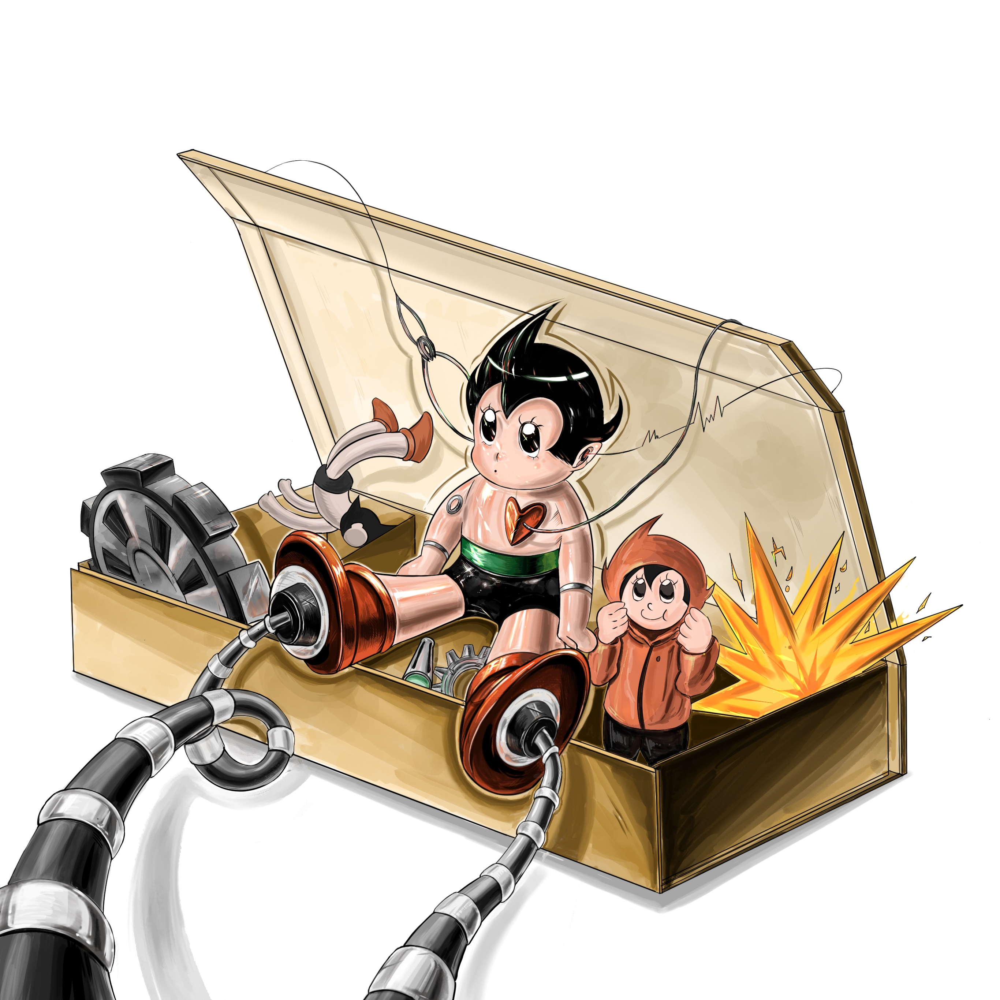
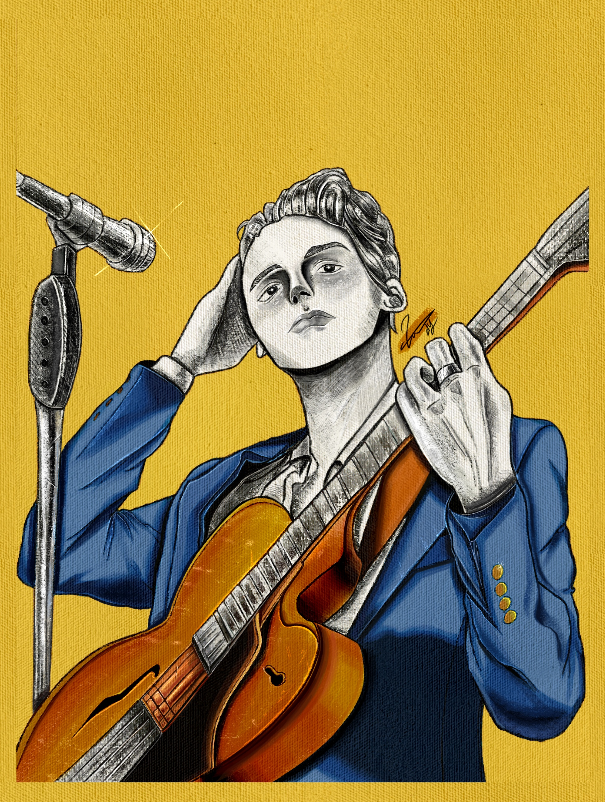
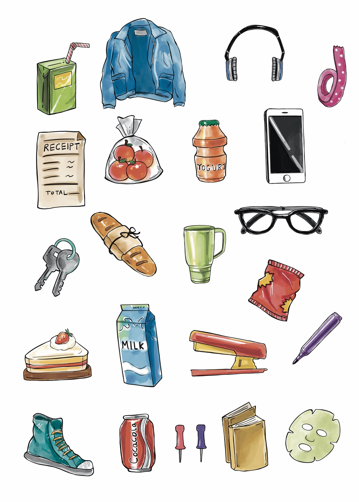

창작의 순간, 로봇 소년
감성적인 장난감 상자 속에서 창작물이 탄생하는 순간을 표현했습니다. 기계 요소와 상상력이 결합된 따뜻한 분위기의 일러스트입니다.

붉은 배경의 결의
붉은 배경과 날카로운 명암, 푸른 눈동자의 조합으로 인물의 강렬한 감정을 극대화한 디지털 인물화입니다.

무대 위의 자아
연주하는 뮤지션의 시선을 통해 자신감과 여유, 그리고 음악을 향한 열정을 표현한 작품입니다.

일상 속 이야기
소소한 일상의 사물들을 아이콘 형태로 재해석한 일러스트입니다. 색감과 구성에서 따뜻한 생활감을 느낄 수 있습니다.

선으로 말하는 자연
펜 드로잉만으로 식물과 해안 풍경을 표현한 섬세한 작품입니다. 질감과 디테일을 통해 정적인 아름다움을 담았습니다.